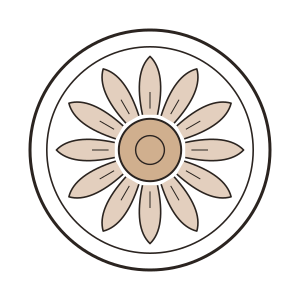
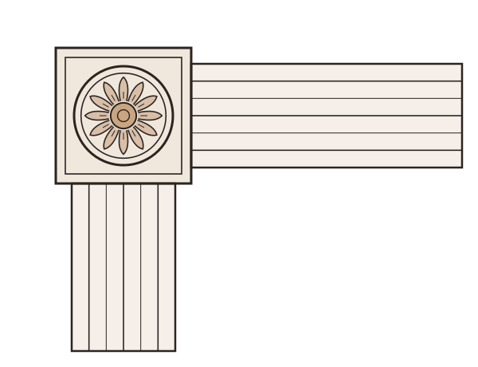

Konsoller og snekkergledeBrackets and decorative trim
Konsoller og snekkerglede, laget i tre.Brackets and decorative trim, made in wood.
Knekter til en solid hattehylle eller en kjøkkenhylle, snekkerglede til veranda og gavl, og rosetter og hjørneklosser til dør- og vindusomramminger. Passer i gamle og nye hus – og kan kopieres etter en gammel del.Brackets for a solid hat shelf or a kitchen shelf, decorative trim for porches and gables, and rosettes and corner blocks for door and window surrounds. Suits old and new houses – and can be copied from an old part.
Dette er designtegninger. Bilder av ferdige deler kommer.These are design drawings. Photos of finished parts are coming.



TreslagWood
Furu, malmfuru eller eik – klar til å males eller ferdig oljet.Pine, pine heartwood or oak – ready to paint or already oiled.
Kopi av gammel delCopy of an old part
Ta med delen eller send bilder med mål, så tegnes den opp på nytt.Bring the part or send photos with measurements, and it is redrawn.
Passer med listeneMatches your trim
Lages i mål som passer gerikt og lister hos deg.Made to sizes that fit the trim around your doors and windows.
Slik bestiller duHow to order
Fra idé til ferdig del i tre steg.From idea to finished piece in three steps.
Send en e-post med hva du ønsker, gjerne med mål, tekst eller et bilde.Send an email with what you have in mind, ideally with sizes, text or a photo.
TegningDrawing
Du får en tegning med mål og pris som du godkjenner før noe blir laget.You get a drawing with sizes and a price to approve before anything is made.
FresingCutting
Delen freses ut i tre på CNC-fresen, nøyaktig etter tegningen.The piece is cut from wood on the CNC router, exactly to the drawing.
OverflateFinishing
Pusset og oljet for hånd. Små detaljer på skilt kan males.Sanded and oiled by hand. Small details on signs can be painted.